1 简介
在整个的运维环节中，对产品的持续构建（CI）持续部署（CD）伴随着产品的整个生命周期。 一个运行良好的运维系统可以辅助提升运营效率，达到持续运营（CO）的效果。OPEN-C3为解决CI/CD/CO而生。
1.1 名字的由来
对于运维来说，CI/CD很容易理解，就是持续的构建，持续的发布。但是对于Open-C3来说，我们想做的更多，运维不紧紧是要持续的构建持续的发布应用。还需要监控业务的状态，在业务异常时候作出相应的调整。或者根据业务的需求进行业务部署的调整。系统运维的工具平台能业务运营提供工具平台支持。举个游戏行业的例子，比如对于游戏的运营，运营团队根据在线人数等数据，可能会做出决定，需要开一个新的区域。 这时就可以通过平台里面编排的流程进行一键的创建。这就是运维工具为运营提供了支持。所以我们加上了CO的概念。
CI/CD/CO 我们称之为C3， 同时3有“多”的意思。我们希望可以持续的做一些事情。包括C3这个项目本身，希望可以持续的做下去。
1.2 适合的读者
本文主要是对运维和运维开发的人员讲解Open-C3的功能和使用方式。如果你正考虑在一个新的企业环境中构建一个自动化运维平台，如果你正考虑使用Open-C3来担任这个运维平台的职责，那么本书正合适指导你一步一步的进行安装和使用。
1.3 本书阅读方式
Open-C3中的功能太过复杂，我们在github中存放了使用手册，但是不熟悉Open-C3的初始用户，可能感觉无从下手。本书最为主要的功能，就是告诉用户，在一个新企业中，怎么一步一步的把Open-C3安装、配置、使用起来。在能讲明白这个的事情之上，才会做一些更深入的探讨。
所以本书是除了第一章，后面的章节都是按照顺序进行的，最好按照顺序阅读和实施，这样更容易理解。
1.4 功能概览
Open-C3提供了一个完整的自动化运维平台，下面具体讲解每个模块的主要功能和职责。

1.4.1 CMDB
1.4.1.1 CMDB主要功能：
1）提供一个完成的记录企业资源/资产的数据库
· 支持的公有云但不限于：AWS、腾讯云、华为云、阿里云、谷歌云、金山云。
· 私有云: OpenStack
· IDC资源： 主机、数据库
2）提供搜索功能
· 模糊全局搜索，比如搜索一个IP
· 根据不同的过滤条件过滤资源
3）提供时间机器功能，可以选择回看历史记录
4）提供资源的一些常规操作：
· 给资源打标签（tags）
· 给资源添加备注
· 查看资源监控信息【跳转到监控系统页面打开对应资源的监控】
· 查看资源详情
5）提供服务树分组功能
· 服务树是C3中是一个很重要的概念，资源、监控策略、发布流水线、权限等都是跟服务树进行关联。
6）给其它子系统提供数据
· 给监控系统和发布系统提供资源分组
1.4.1.2 次要功能：
1）提供服务分析能力
· CMDB中包含中包含了企业基础所有的资源列表和详情。可以跟进这个内容生成调用关系。
2）为第三方系统提供接口
· 给堡垒机提供资源列表
1.4.1.3 界面截图：

（CMDB资源概览）

（CMDB服务分析图）
1.4.2 监控系统
I ) 主要功能：
1）支持监控常规资源：主机、Mysql、Redis、MongoDB
· 除了常规指标，还支持自定义进程、端口等监控
2）支持云监控：阿里云、华为云、AWS、谷歌云、腾讯云 等。
3）支持KUBERNETES监控
4）支持根据服务树纬度查看资源看板
5）提供告警处理功能
· 提供页面显示当前告警列表
· 告警认领、告警屏蔽、告警升级功能
II ) 次要功能：
1）支持其他类型监控，如： ssl证书过期、域名监控
III ) 界面截图：

（主机监控图）

（数据库监控图）
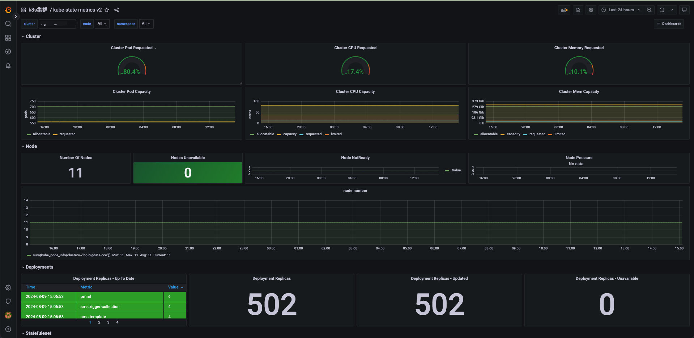
（KUBERNETES集群监控图）
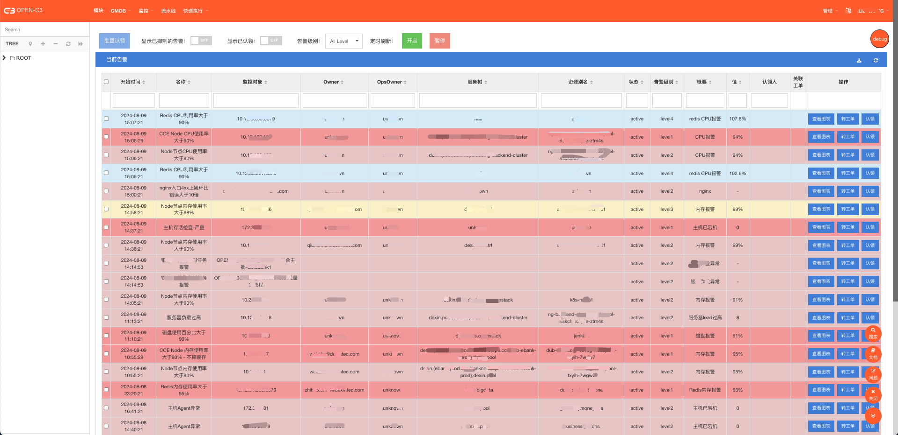
（当前告警页面）
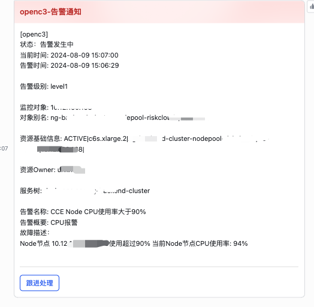
（告警消息）
1.4.3 发布系统
I ) 主要功能：
1）支持发布流水线，支持传统主机发布、支持Kubernetes应用发布
· 支持主机分批发布
· 支持一键回滚
2）发布过程有支持审批步骤
II ) 界面截图：
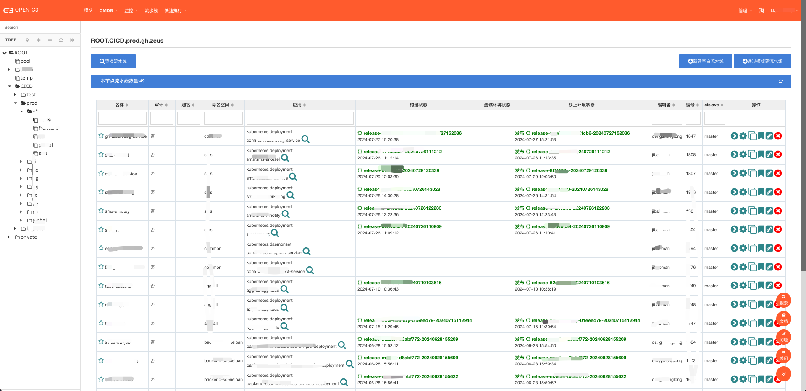
（某个服务树下流水线列表）

（单个流水线）
1.4.4 故障自愈
I ) 主要功能：
1）支持监控告警和作业进行关联，起到告警触发修复作业的作用。
II ) 界面截图：
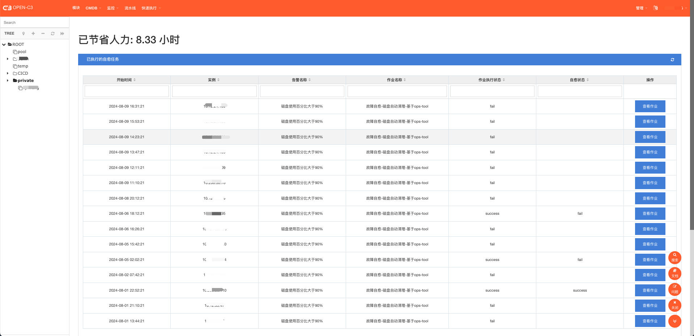
（故障自愈触发列表页）
1.4.5 工单
I ) 主要功能：
1）支持工单的生命周期管理：工单创建、分配、处理、关闭。
2）支持消息通知
II ) 界面截图：
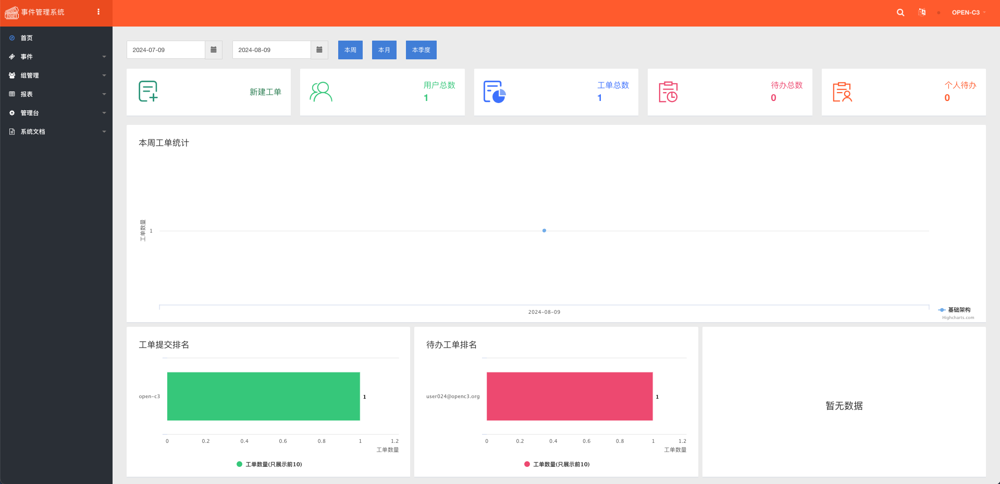
（工单首页）
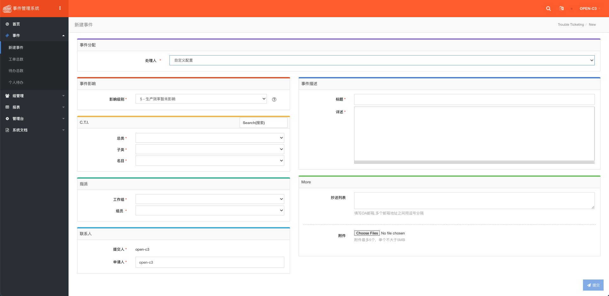
（工单提交页面）
1.4.6 BPM流程
I ) 主要功能：
1）自动化流程支持创建云资源或者修改云资源配置：
· 腾讯云： CVM、CLB、Mysql 等
· AWS： EC2、SQS 等
· 谷歌云：VM、LB 等
2）流程过程支持审批
3）流程系统支持对接工单
II ) 界面截图：
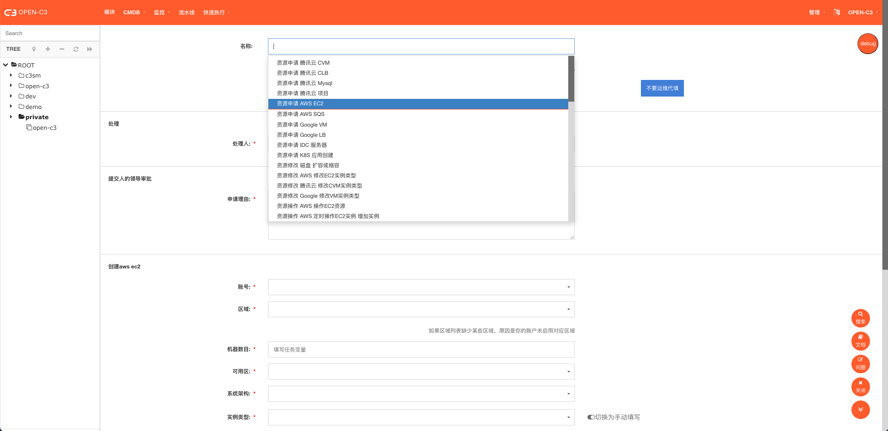
（流程提交页面）
1.4.7 成本优化
I ) 主要功能：
1）自动识别低利用率资源
· 主机： 主机利用率、磁盘利用率
· AWS： RDS、Redis、ALB、ELB、NLB, AWS磁盘卷
· 腾讯云: CLB、Redis
· 华为云：RDS、Redis
2）添加费用计算功能，计算服务树费用、资源费用
· 支持： 华为云、AWS
II ) 界面截图：
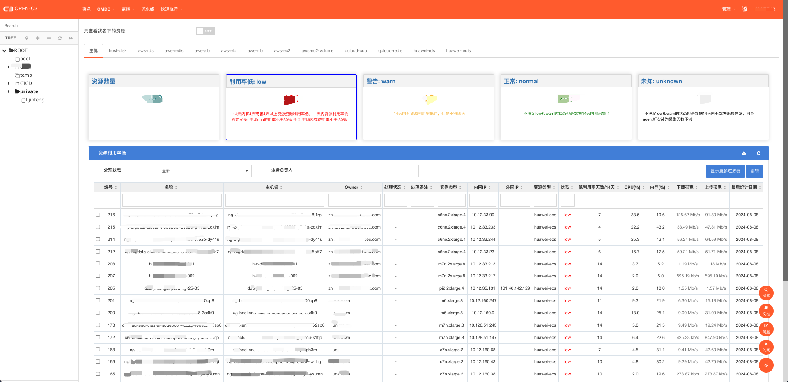
（低利用率资源查看页面）
1.5 开源说明
Open-C3使用GNU许可(GNU General Public License,简称GPL)，可以自由使用。允许任何人自由运行、研究、分享和修改。
2 安装
OPEN-C3安装分为体验版、单机版和集群版，请根据实际情况进行选择。
2.1 体验版
为了让用户快速体验OPEN-C3的功能，OPEN-C3提供了体验版。
通过Docker命令启动服务，当前使用8080端口，根据自己的情况修改。
docker run -p 8080:88 openc3/allinone:latest访问服务：http://localhost:8080 。
用默认账号登录
· 用户： open-c3
· 密码：changeme
2.2 单机版安装
2.2.1 准备运行环境
准备一台服务器，配置如下：
- 操作系统：CentOS 7
- CPU: 4核
- 内存: 8G
2.2.2 一键安装
注：一般情况下使用以下安装方式即可，如果有网络问题，请使用C3安装器进行安装。
curl https://raw.githubusercontent.com/open-c3/open-c3/v2.6.1/Installer/scripts/single.sh | OPENC3VERSION=v2.6.1 bash -s install 10.10.10.10#(机器的ip地址,如果需要通过公网访问，请填写公网ip)
#访问不了github的用户可以使用下面命令进行安装【以gitee作为数据源】：
#curl https://gitee.com/open-c3/open-c3/raw/v2.6.1/Installer/scripts/single.sh | OPENC3VERSION=v2.6.1 OPENC3_ZONE=CN bash -s install 10.10.10.10.... [SUCC]openc-c3 installed successfully.=================================================================Web page: http://10.10.10.10User: open-c3Password: changeme[INFO]Run command to start service: /data/open-c3/open-c3.sh start ... Creating openc3-mysql ... doneCreating c3_openc3-server_1 ... done[SUCC]started.注：程序安装后会产生两个目录
· /data/open-c3用于存放代码
· /data/open-c3-data用于存放数据【包括数据库数据，日志等】。
2.2.3 通过浏览器访问服务
通过80端口访问服务
用默认账号登录
· 用户： open-c3
· 密码：changeme
2.3 集群版安装
集群版本安装细节在官方文档可以查看，正常情况下安装单机版本即可。
3 资源托管
3.1 简介
运维平台使用的第一步，我们需要把要管理的资源先托管到平台中。需要把你的公有云帐号、私有云帐号、或者IDC资源先托管到平台中。平台会定时的进行同步。
托管进来的资源需要一个合适的分组，需要跟进业务情况配置好服务树的结构，然后把资源挂载到对应的服务树上。这样监控系统、发布系统等就可以方便的获取分组的资源。业务后续添加或回收资源，只要在服务树上进行对应操作即可，不用调整监控和发布的配置。
3.2 资源帐号导入
在“管理”->“CMDB”菜单。导入自己的云帐号
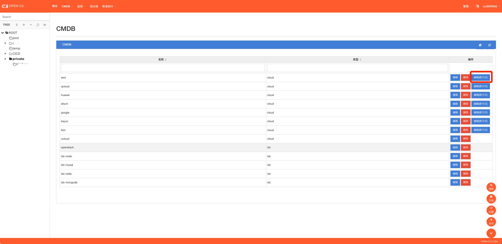
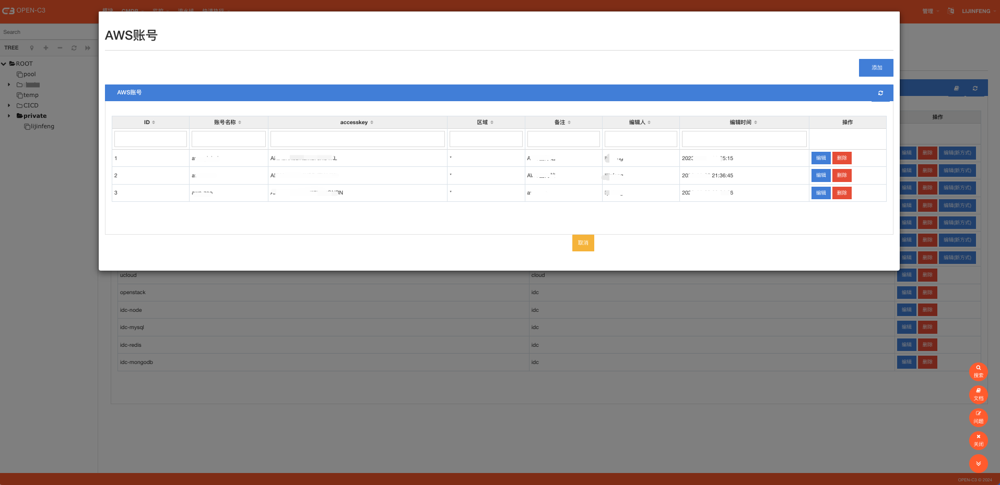
如果想调整资源同步的频率，可以在”管理”->”系统参数”中进行修改
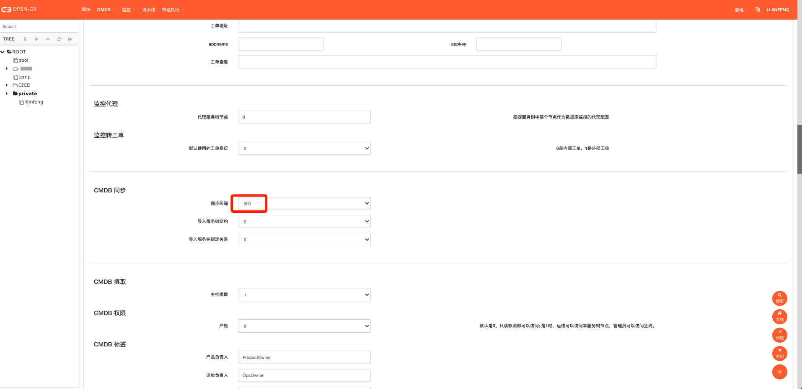
3.3 服务树编辑
服务树是一个很重要的概念，这里我们按照业务情况创建服务树。
在”管理”->”编辑服务树节点” 菜单。这里我们可以右键选择服务树节点来创建和删除节点。
推荐的服务树结构，你可以跟进企业的业务的复杂度进行选择：
类型一：
ROOT-> 子公司 ->事业部-> 部门 -> 服务 -> 模块
类型二:
ROOT-> 事业部-> 部门 -> 服务 -> 模块
类型三:
ROOT-> 部门 -> 服务 -> 模块

3.4 资源自动挂树
自动同步下来的资源没有挂树，根据下面的配置把资源自动的挂载到某些服务树下。
3.4.1 默认pool节点
一般我们会创建一个服务树节点，如: ROOT -> 企业 -> pool 或者 ROOT -> pood
新创建出来没有挂服务树的资源自动的挂到该节点上，根据下面的配置来完成
# cat /data/open-c3/AGENT/device/conf/config.defaulttree.private default: xxx.pool
注: 其中xxx.pool 就是你想挂载的服务树， 不用写ROOT的部分。
这样就可以通过查看pool节点的资源，清楚知道哪些资源没有挂树，也可以在pool节点上配置监控策略等。
3.4.2 根据资源特点自动分类
方式1：
通过配置/data/open-c3-data/buildintree/v2.yml文件来实现。
下面以华为CCE（CCE是华为云上的KUBERNETES服务）节点为例子
cat /data/open-c3-data/buildintree/v2.yml compute: huawei-ecs: - tree: xxx.ops.cce.xx-backend-cluster match: - [ 'tags', '/xxxxxxxx-xxxx-xxxx-xxxx-xxxxxxxxxxxx/' ] - [ 'tags', '/CCE/' ] - tree: xxx.ops.cce.xx-bigdata-cluster match: - [ 'tags', '/xxxxxxxx-xxxx-xxxx-xxxx-xxxxxxxxxxxxx/' ] - [ 'tags', '/CCE/' ] - tree: xxxx.ops.cce.unknown match: - [ 'tags', '/CCE/' ]
这样配置后，CCE节点池自动扩缩容时，资源挂树的动作会自动完成。
方式2:
通过云资源tags来控制。
云资源上是可以打标签（tags）。 如果云资源上存在名为“tree”的标签。 Open-C3会跟进这个标签来挂树， 比如资源有一个tags名为tree,值为 xxx.ops 。那么资源同步到CMDB后，会自动挂到xxx.ops服务树下。
3.5 资源手动挂树
可以勾选资源ID前面到选择框对资源进行挂树操作。
复制到： 资源是可以同时挂在多个服务树上的，“复制到”按钮会把该资源复制到其他服务树，点击后会出现服务树选择的弹窗，选择服务树后，资源会被服务树到该服务树上。
移动到： “移动到”和“复制到”的区别是，操作完后，该资源会被移动到目标服务树，同时会在当前服务树中移除，是一个移动的动作。
归还: 资源归还后，会回到默认的pood节点。

3.6 总结
通过上面的操作后，CMDB基本完成，可以对资源进行挂树，可以查看资源，搜索资源。也可以选择时间查看某个历史时刻的资源详情。
如果你用的不是云资源，可以在“管理”-> “CMDB”菜单 中选择idc类型，把你的资源托管到CMDB中。
为了让这个文章更连贯，这里先不展开讲怎么添加自定义的资源，怎么使用服务分析功能。在后续的其他章节中在展开。
4 主机基础监控
4.1 简介
主机监控是一个最常见的监控类型。根据主机监控的添加，能更好的理解监控系统的整个配置过程。
4.2 安装AGENT
打开”业务管理”->”代理设置(AGENT安装)”页面。
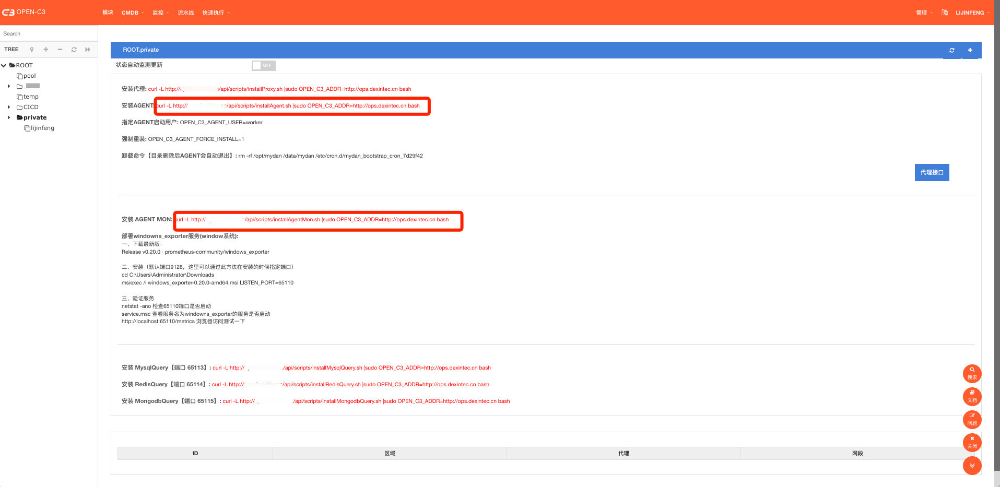
Open-C3中和主机相关的有两个AGENT，一个是发布的AGENT（截图中的“安装AGENT”）一个是监控的AGENT（截图中的“安装AGENT MON”）。
有的企业只用到Open-C3的监控功能，有的企业可能只用Open-C3的发布功能。所以这里目前这两个AGENT是独立安装的。但是目前监控AGENT依赖发布AGENT的文件，所以这里先把监控和发布的都进行安装。不想启动发布AGENT的，在把发布AGENT停掉。
根据截图中的链接，把发布AGENT和监控AGENT安装上。
4.3 监控看板
安装完后，我们可以到“监控”->”监控看板”中查看资源的监控看板。Open-C3会根据你点击的服务树的深度，显示不一样的看板。

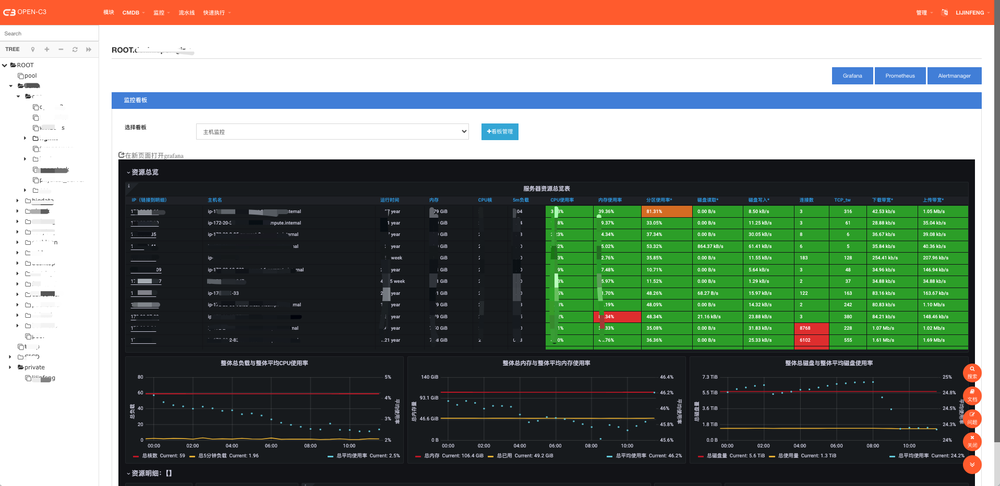
4.4 配置消息出口
Open-C3系统会对外发送三种消息，邮件、短信（短信、飞书消息、钉钉消息等都归为同一类）、语言电话。
同时Open-C3提供了不同的方式对接。主要分为连接器对接和直接对接。连接器对接是设想企业中应该有发送这三类消息的接口，把这些接口配置到Open-C3的连接器配置中即可【当然Open-C3的接口需要符合一定的格式】。
4.4.1 连机器对接方式
到“管理”->”设置连接器”页面设置消息出口。

消息出口需要appname和appkey完成验证【添加http的Header】。
I ) 邮件
配置的地址示例:
http://api.connector.open-c3.org/default/mail 调用方式：POST
参数user：用户名，接口需要自己查询对应的用户的邮箱地址
title:邮件标题
content:邮件内容
返回：{ stat： true }
II ) 短信
配置的地址如下:
http://api.connector.open-c3.org/default/mesg 调用方式：POST
参数user：用户名，接口需要自己查询对应的用户的手机号
mesg:短信内容
返回：{ stat： true }
III ) 语音
配置的地址如下:
http://api.connector.open-c3.org/default/mesg#使用内置是和短信接口一样
调用方式：POST
参数user：用户名，接口需要自己查询对应的用户的手机号
mesg:语音内容
返回：{ stat： true }
4.4.2 直接对接方式
I ) 邮件
到“管理”->”系统参数”配置邮件配置。

II ) 短信
短信目前支持飞书、钉钉、Lark
4.4.2.2.1钉钉：
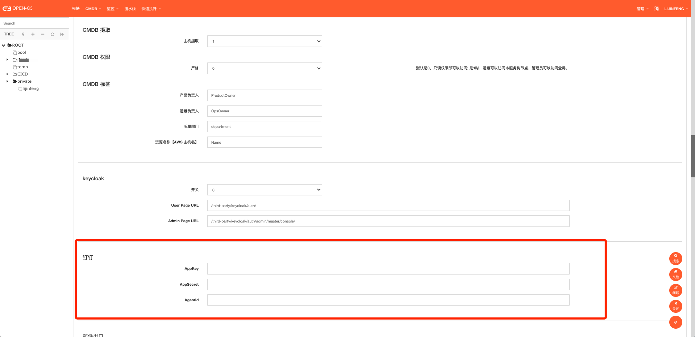
4.4.2.2.2飞书：
飞书到配置文件 /data/open-c3-data/sysctl.conf 中配置 sys.send.feishu.app_id 和 sys.send.feishu.app_secret 字段
4.4.2.2.3 Lark：
Lark到配置文件 /data/open-c3-data/sysctl.conf 中配置 sys.send.lark.app_id 和 sys.send.lark.app_secret字段
III ) 语音
语言目前只支持连接器对接的方式。
4.5 消息模版
如果不配置模版，发送出来的内容会很简单。这里需要到“管理”->”模版管理”页面配置一下告警消息的模版。
如果不想做太多调整，直接点击右上角的复制模版按钮，复制出标准模版然后保存即可。
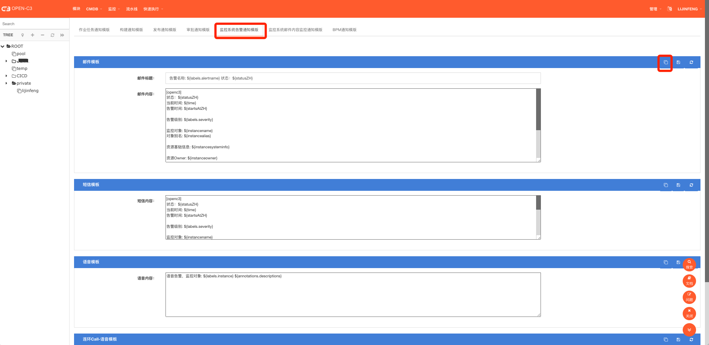
4.6 消息总开关
系统设计了消息总开关，确保消息开关是开启的状态，到“管理”->”通知管理”把告警系统的全部勾选上。

4.7 地址簿管理
在“配置消息出口”章节中，我们定义了三个消息出口。当我们在配置告警的时候，最简单的例子是我们通过用户名称来配置告警接收人，比如 zhangsan 。
系统在把消息往外发送之前，会在地址簿里面查找有没有定义该用户的地址簿。如果有，会根据地址簿中的配置做一层转换。
举个例子：
当前短信出口，我们用的是连接器的方式。如果不配置地址簿，当我们给zhangsan发送短信消息的时候，传递给短信接口的用户这个字段的内容是“zhangsan”。 这样就要靠短信接口自己寻找zhangsan的手机号然后发送短信。这个也是合理的方式，有的企业的消息出口就是根据用户名来发送消息的，他们会查询自己公司的OA系统来找用户的手机号然后发送消息。 但是如果我们配置了地址簿，比如地址簿中我配置了zhangsan的手机号是133xxxxxxxx , 那么在调用短信接口的时候，用户的字段就变成133xxxxxxxx。
同时，系统提供了一下简单的消息发送的方式，比如飞书机器人，这个不需要预先配置任何东西，在飞书上创建机器人后，在地址簿的消息
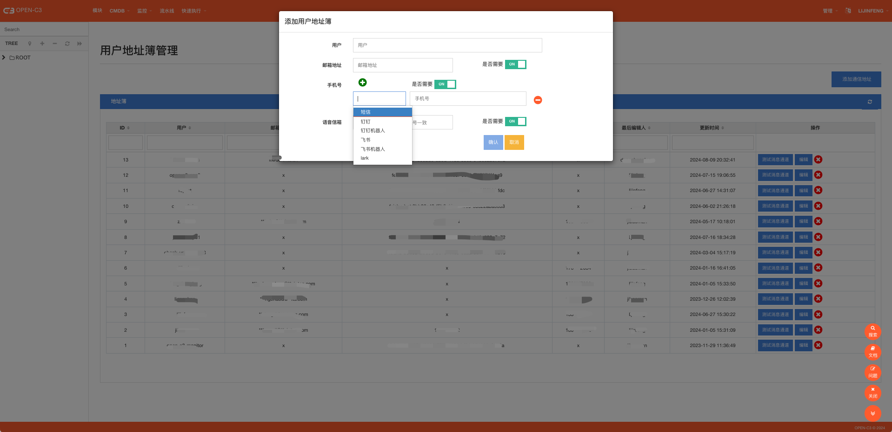
4.8 监控策略
在对应服务树上配置监控策略，进到“监控”-> “监控配置”页面，点击对应的服务树。监控策略是配置在服务树上的，资源也是挂载到服务树上。 所以正常情况下，你想这个策略监控哪个服务树上的资源，就到那个服务树上配置监控策略。
注： ROOT节点的服务树不允许配置监控策略。
首次使用，可以直接从“通过模版添加监控策略”来导入一些常用的监控策略。
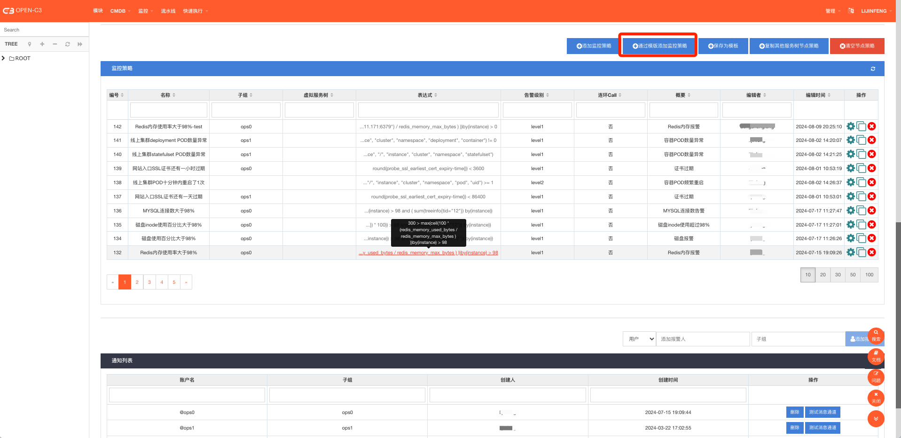
4.9 配置告警接收人
监控策略是绑定在服务树上的，告警接收人也是绑定在服务树上的。所以想接收哪个服务树上的告警，就到“监控”->“监控配置”中添加保荐人即可。 这里可以填写地址簿中之前添加的用户。

4.10 接收告警
通过上述配置后，当告警发生的时候，就会收到对应的邮件、短信、电话语言。下面是飞书收到消息的例子。
4.11 查看当前告警列表
可以到“监控”-> “当前告警”页面查看当前正在发生的告警。
（当前告警页面）
4.12 总结
这个章节我们主要讲了主机监控的配置，为了更简洁与连贯，我们没有展开讲关于告警组、策略分组、策略的不同配置方式等。
5 Open-C3中的网络代理
5.1 说明
在上一章节的监控中，我们讲到了监控AGENT的安装，同时也讲到了监控AGENT和发布AGENT是两个不同的AGENT。我们讲到我们安装完AGENT之后，Open-C3系统就可以采集所有的主机的监控数据。
监控AGENT监听端口：65110
发布AGENT监听端口：65111
但是现在我们考虑一个问题， 如果企业中划分了很多小的网络，比如VPC，他们之间没有互通怎么办？
如果你的企业中不存在这个问题，可以跳过这个章节。
Open-C3的监控和发布的AGENT，内置代理功能，每个隔离的网络区域中，Open-C3只要能访问这个区域里面其中一台机器，监控和发布的AGENT就能正常工作。
只需要在Open-C3的页面中配置好网段信息，系统就会自动进行代理。
5.2 配置
进到“业务管理”->”代理设置（AGENT安装）”页面。 同时因为代理是和服务树节点是相关的，现在我们配置一个缺省的代理（配置在ROOT服务树节点上）。
点击右上角的➕按钮创建代理。
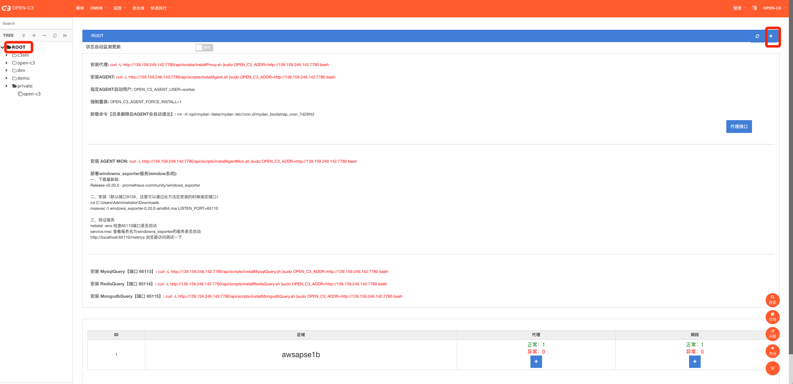
创建代理的时候只需要提供代理的名称
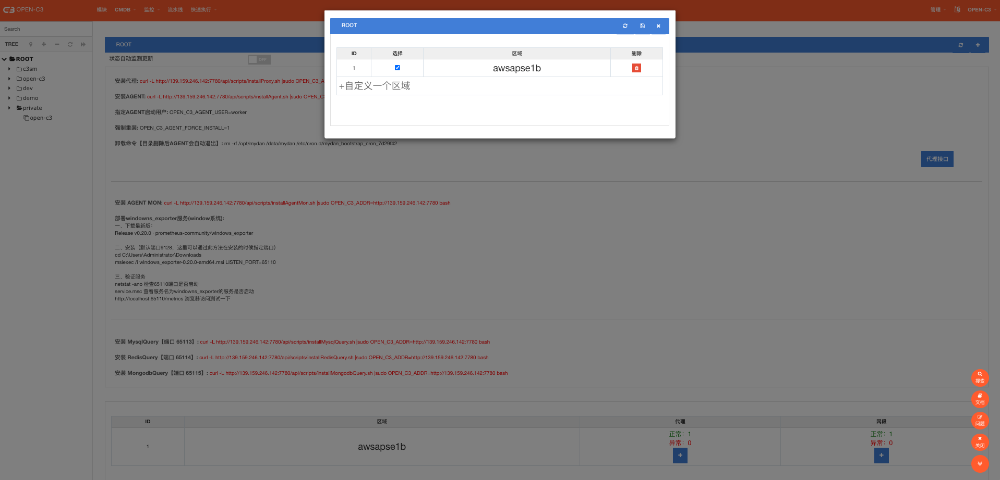
代理创建完后，我们需要设置代理的IP和代理的网段。代理的IP就是指这个网络不通的区域，我们需要一台机器能同，这个机器就是代理的IP，一般情况下是个公网IP。

添加完代理IP，我们需要添加代理网关，也就是说，Open-C3在遇到这些网段的时候，会从刚才的代理IP进入。

网段的配置越精确优先级越高。举个例子：
比如当前你配置了两个区域：
区域A: 代理ip是 100.100.100.1 ， 代理的网段是 10.0.0.0/8
区域B: 代理ip是100.100.100.2, 代理的网段是 10.10.10.0/24
当监控系统或者发布系统想调用IP 10.10.10.2 时，它可以匹配上区域A和区域B，但是因为区域B描述的网段更精确，所以会选择区域B中的代理ip 100.100.100.2来代理10.10.10.2。
5.3 关于代理的继承
这里我以发布AGENT举个例子，比如现在我在服务树节点 ROOT.open-c3.test 上配置了一个主机发布流水线【不是KUBERNETES类型的发布】。
那么在给要发布的机器发送指令的时候。 Open-C3系统首先会在 ROOT.open-c3.test 节点的代理配置中找是否有匹配的代理，如果没有，会到它的父节点 ROOT.open-c3查找，如果在没有接着往上找，知道找到ROOT节点。
所以里面存在了一个继承的关系，我们可以在ROOT节点配置全局的代理，如果哪个服务树需要微调，可以在自己本服务树上在进行配置。
监控代理的说明：
我们这里可以想到，发布和监控连接主机的区别。发布的时候，因为发布流水线是配置某个服务树上的，发布AGENT调用的时候就可以很明确的匹配到代理的配置【匹配当前服务树节点的代理配置，如果不匹配就往父节点查找，一直查到到ROOT节点】。 但是监控AGENT调用的时候有一个区别。因为服务器节点可以挂在多个服务树下，然后采集监控数据的时候，我们不会做重复的采集，所以一个节点挂在多个服务树上，但是我们只会采集一次。这样就会导致代理配置不明确的问题，比如一个节点挂在两个服务树上，但是两个服务树对该节点的代理配置以哪个为准？对于这种情况，监控系统默认全部从某个服务树节点获取配置，而不在区分资源挂在了哪个服务树下面。该节点默认是ROOT节点，也可以在系统配置中自己定义。
自定义监控节点的代理服务树节点，到“管理”->”系统参数”下面进行设置：

5.4 总结
代理解决了让Open-C3能调用通所有机器和数据库的问题。有了代理功能，企业在使用多隔离网络区域的情况下，只需要极小的调整，就可以让Open-C3可以访问通所有的资源。同时代理功能可以减少网络传输的流量，在跨区域传输文件的时候，每个区域只需要同步一份数据，然后会自动的在区域内部进行分发。
6 数据库监控
6.1 简介
这一章节，我们讲关于数据库直连的监控，数据库监控指标的采集，有的指标可以通过连接数据库获取指标，有的需要通过云平台的接口（比如Mysql磁盘使用率）。其中可以通过连接数据库获取的指标我们称为直连监控。 通过云平台的接口获取的部分我们归类为云监控。
6.2 采集器
数据库的监控都是通过采集器来完成了。如果企业中，Open-C3部署的机器可以访问所有的数据库，没有使用过上一章节所说的代理，则不用单独部署AGENT。 采集器会在Open-C3上执行。
但是如果使用了代理的功能，则需要在代理机器上部署采集器管理器【可以把所有的代理机器都安装上管理器，或者只在该区域存在数据库的情况下进行安装】。
安装方式，进到”业务管理”->”代理设置（AGENT安装）”页面。

执行这些命令进行安装，同时确保Open-C3的机器到这些代理机器的对应端口可以访问通。
6.3 监控策略
系统内置了两个模版：
sys.db-mysql-base-global: 监控对象是所有的数据库资源
sys.db-mysql-base-local: 监控对象是本服务树资源，也就是你所配置监控策略的服务树节点，监控的就是本服务树的资源
如果这两个模版不满足需求在自行调整。
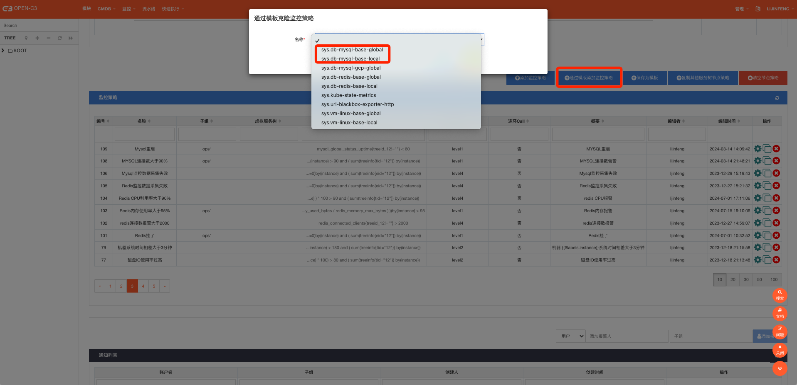
6.4 监控看板
打开下面目录，导入对应看板：
https://github.com/open-c3/open-c3-guide/tree/main/attachments/monitor/grafana/database
注：国内地址：
https://gitee.com/open-c3/open-c3-guide/tree/main/attachments/monitor/grafana/database
默认的grafana 用户/密码 是 admin/admin， 只有Open-C3的管理员角色的才能登陆，所以可以不修改grafan的默认密码。


6.5 总结
数据库监控的采集方式和主机监控的不一样，这个章节主要讲述了怎么对数据库监控指标的采集和监控策略、看板的导入。其他和主机监控的部分不在赘述。
7 Kubernetes监控
7.1 简介
KUBERNETES监控部分更多的是统一管理。目前Kubernetes有很多监控方案，包括如果使用的是公有云上的Kubernetes，云上也可以配置对应的监控。但是这个太分散了，我们需要把它聚合到一起。需要在监控看板上看到这些监控告警。
7.2 安装和配置
7.2.1 安装kube-prometheus
打开下面github的项目，在Kubernetes集群中安装普罗米修斯的监控套件。
https://github.com/prometheus-operator/kube-prometheus
7.2.2 端口对外开放访问
安装完后，确保安装在集群中的普罗米修斯的端口对外可以访问，Open-C3会通过这个端口把数据汇总到Open-C3服务的普罗米修斯中。
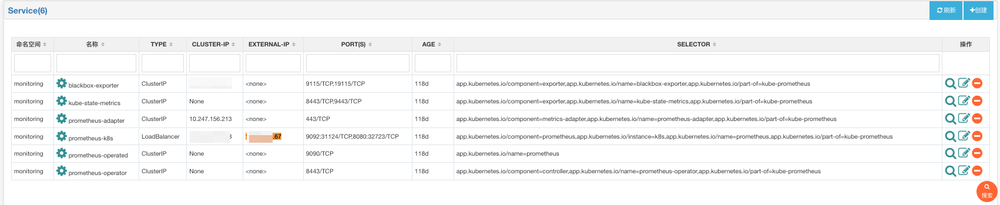
如果默认没有对外开放，可以手动添加一个映射：

7.2.3 在云监控中配置采集
进到“管理”-> “云监控”页面，点击添加云监控。
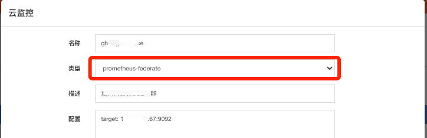
采集添加后，Open-C3上的普罗米修斯就会把Kubernetes中普罗米修斯的数据实时的同步到Open-C3上。
7.3 添加监控策略

导入后可以看到监控策略，在该服务树上订阅告警。
7.4 监控看板
打开下面目录，导入对应看板：
https://github.com/open-c3/open-c3-guide/tree/main/attachments/monitor/grafana/kubernetes
注：国内地址：
https://gitee.com/open-c3/open-c3-guide/tree/main/attachments/monitor/grafana/kubernetes

7.5 总结
Kubernetes 中的应用，Kubernetes会调度使得应用状态是我们期望的样子。这里的监控更多的是监控POD有没有频繁重启、POD运行数量是不是持续没达到预期的数量。
8 云监控
8.1 简介
在Open-C3中，监控分为两种：
直连监控： 要采集的监控数据，是可以通过直接连接监控对象获取的，比如监控主机、数据库等，程序是可以直接和这些对象建立连接获取数据，
云监控： 需要连接外部平台或者系统来采集的数据。 比如我们要采集公有云上Mysql数据库的磁盘使用率，我们是通过云接口获取的。在比如我们监控kubernetes中的pod，我们没有和pod真实建立连接，而是通过部署在kubernetes中的普罗米修斯来获取。
8.2 配置
进到”管理”-> “云监控”页面添加和管理云监控的配置。

可以看到添加的时候需要选择类型，类型决定了这个采集任务采集的是什么数据。 每一种类型的配置文件都不一样。 可以到open-c3的文档【https://open-c3.github.io】中查看配置文件的格式。

这些配置文件的配置方式是从代码仓库中自动提取的，会更准确和时效。所以这里不重复描述具体的配置格式。
8.3 监控看板
打开下面目录，导入对应看板：
https://github.com/open-c3/open-c3-guide/tree/main/attachments/monitor/grafana/cloud
注：国内地址：
https://gitee.com/open-c3/open-c3-guide/tree/main/attachments/monitor/grafana/cloud
部分云监控的监控看板在 数据库的分类中，根据对应类型进行了存放。 比如腾讯云的cdb，可以在database看板目录的mysql子目录中查找。
8.4 总结
云监控部分，因为开源的采集器很多，读者根据自己的情况查找对应的看板。
9 ping监控
9.1 简介
在企业环境中，我们需要监控监控网络的延迟和丢包情况。
9.2 配置
9.2.1 配置/源
配置
源是发起ping的主机节点。
在 src 目录下，存放源主机分组，每个文件是一个分组，文件每行是个ip或者域名
例子:
[root@open-c3]# ls src
cloud-aws-afs
cloud-huawei-open-c3
[root@open-c3]# cat src/cloud-huawei-open-c3
openc3-fping
[root@open-c3]# cat src/cloud-aws-afs
10.10.10.111
10.10.10.112
在源机器上启动容器
docker run -d --restart=always -p 9605:9605 --name openc3-fping joaorua/fping-exporter fping-exporter --fping=/usr/sbin/fping -c 10
ACL
开放访问权限，让Open-C3机器访问源机器的9605端口
9.2.2 配置/目标
目标
目标是要ping的对象，放在dst目录下，每个文件是一个分组。格式和源一样
9.2.3 配置/采集
配置采集
conf.yml配置着需要采集的任务，是个yaml格式
key是src中源的名称
valus是个数组，数组中的元素是目标的名称，或者一个正则表达式匹配目标中的名称。
特殊情况，当value是 '*'时表示所有目标组
例子:
# cat conf.yml cloud-huawei-open-c3: [ '/country/', '/website/', '/cloud/', '/workplace/' ]cloud-ucloud-ng: [ '/country/', '/website/' ]cloud-huawei-afs: [ '/cloud/' ]cloud-aws-afs: [ '/country/' ]cloud-aliyun-frankfurt: '*'
9.2.4 配置/生成普罗米修斯配置
生成普罗米修斯配置文件
到容器中该目录下执行 ./make.sh 命令
9.3 导入看板
打开下面目录，导入对应看板：
https://github.com/open-c3/open-c3-guide/tree/main/attachments/monitor/grafana/fping
注：国内地址：
https://gitee.com/open-c3/open-c3-guide/tree/main/attachments/monitor/grafana/fping

Ping监控在分组起名的时候，用“-”号分隔。 第一个段为分组。
9.4 总结
该ping监控可以监控到全局的网络延迟和丢包情况。但是有个弊端，如果Open-C3到源机器丢包严重，可能会采集不到数据。如果有这个担忧可以在源机器上安装kuma程序进行补充监控。
docker run -d --restart=always -p 3001:3001 -v uptime-kuma:/app/data --name uptime-kuma louislam/uptime-kuma:1
10 服务分析/业务分析
10.1 简介
有的企业业务模块很多，在业务出现问题时，为了方便运维或者值班人员快速了解业务的上下层级结构。Open-C3根据CMDB中的信息，生成了一个树形结构。从这个结构可以看到域名下面是那个负载均衡器，负载均衡器下面是什么资源、等等。
同时可以进行搜索、比如通过一个域名搜索它下面的结构，或者根据一个服务名称搜索。或者通过Kubernetes的镜像名称进行搜索。
我们在“服务分析”功能中搜索域名进行查看的时候。系统会显示类似： 域名->加速->DNS解析-> 负载均衡 -> nginx -> 负载均衡 -> Kubernetes.service -> Kubernetes.pod 的结构。
10.2 配置
10.2.1 Nginx
在CMDB中，我们会自动获取很多资源，包括所有的nginx的配置文件。因为每个企业的nginx配置路径可能会有所区别，这里看情况进行配置。
默认情况下，我们会把服务树中，名字为nginx的节点下面的机器当作nginx节点。同时我们默认采集 /data/apps/nginx/conf/conf.d、/etc/nginx/conf.d、/usr/local/openresty/nginx/conf/conf.d 下的nginx配置文件到CDMB中进行搜索和分析。

如下是系统默认的配置文件：
# cat /data/open-c3/Connector/pp/service-analysis/nginx/nginx.nodenginx /data/apps/nginx/conf/conf.dnginx /etc/nginx/conf.dnginx /usr/local/openresty/nginx/conf/conf.d
如果采集的nginx内容不符合自己预期。可以在文件名为/data/open-c3-data/service-analysis/nginx.node中配置自己的采集规则。
文件内容的格式为三列。
第一列是资源列表， 可以是ip地址、服务树id、“nginx”字样。
第二列是要采集的目录路径。
第三列是路径的别名，默认情况下可以为空，系统会自动生成。
10.2.2 Kubernetes
从本章简介中，我们说到，服务分析功能可以搜索Kubernetes的信息，要展示这些信息，我们需要导入我们的Kubernetes集群。
Open-C3中有kubernetes集群管理的功能。导入kubernetes后，系统会自动获取集群的信息到CMDB中，包括service、pod等。
可以到“容器集群”->”kubernetes应用管理”菜单中找到kubernetes管理页面进行导入。
后面章节还会对集群管理展开讲解，这里就不单独赘述。
10.3 展示
可以看到，当搜索资源时，可以看到上下层级的结构。
这样就可以在搜索域名的时候，知道这个域名是那个容器提供的服务，或者搜索一个ip的时候知道是那个域名在使用等。
10.4 总结
CMDB中的资源，可以自动的生成服务分析的结构。这样方便了我们查看资源上下层级结构。
11 网站入口监控
11.1 简介
跟进上诉章节的描述，我们得知CMDB中已经包含了网站的入口信息，包括nginx的配置。本章节描述网站的监控。会跟进CMDB中的内容，自动生成要监控的URL地址。
监控网站的https证书和返回码。
11.2 配置
默认情况下不会自动的进行监控，需要添加监控源。
在/data/open-c3/Connector/pp/mmon/http-monitor/src.txt文件中添加监控的源机器ip或者域名。
在源机器上执行脚本 /data/open-c3/Connector/pp/mmon/http-monitor/start-docker.sh ，脚本会启动一个blackbox容器，端口为9115， 确保Open-C3能访问源机的9115端口。
配置完成Open-C3开始采集监控。
11.2.1 特殊处理
snapshot
有的企业，可能需要监控的url很多。一下子不好排查，可以执行./snapshot-make.sh
它会把当前的情况进行一个锁定。如果监控的url返回码发生变化了在进行告警。
获取3个小时内的数据，获取所有url中的返回码。如果返回码是0的取消，可能是暂时不通。
如果有多个返回码，有200的情况下是200。否则哪个返回码数量多就是哪个。
mark
有的情况下，你可能想自己定义一些要监控的url。在cmdb自动生成的范围之外。
可以把要监控的内容记录到mark.txt文件中，格式可以参考mark.example.txt
ignore
系统根据CMDB自动生成了很多要监控的url，如果有不需要监控的，请记录到ignore.txt文件中。
系统会把这部分url屏蔽掉。
格式是一行一个url，可以参考mark.example.txt文件内容
11.3 监控看板
打开下面目录，导入对应看板：
https://github.com/open-c3/open-c3-guide/tree/main/attachments/monitor/grafana/http-monitor
注：国内地址：
https://gitee.com/open-c3/open-c3-guide/tree/main/attachments/monitor/grafana/http-monitor
11.4 总结
本章描述的监控，可以监控到企业总所有入口的服务是否正常。每个企业中对“服务正常”的定义可能不一样，这里暂时不提供监控模版。在有多个数据源的情况下，有的可能认为，所有的都可以请求成功才算服务正常。有的可能只要有一个源可以正常访问服务就算服务正常。
12 进程、端口 等监控
12.1 简介
关于主机的监控，默认采集的指标是普罗米修斯Node exporter采集的数据。这些指标是比较固定的。 如果想监控主机上的端口、进程、http等会比较麻烦。Open-C3的监控Agent提供了这部分数据的采集能力。只需要在对应的服务树上配置要采集的内容，系统会给对应服务树下所有的机器下发采集任务。
12.2 配置
如下图，在监控告警配置页面，点击“添加监控指标采集”的按钮，可以看到关于端口、监控等监控的配置方式。可以根据页面中的帮助内容查看具体用法。
监控Agent可以下发已经定义的监控任务，同时它可以接受本地的push请求，可以把监控指标push到本机的监控Agent 65110端口上，监控Agent会进行记录，Open-C3系统会把他采集回来。
添加采集只是有了监控的指标，指标具体怎么配置告警策略还需要单独配置。可以参考前面章节的配置方式。
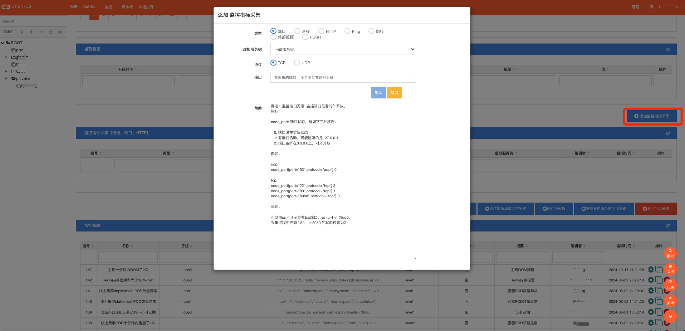
13 第三方告警接入
13.1 简介
Open-C3提供了一系列的告警指标采集，监控告警，同时有“当前告警”页面可以查看当前正在发生的告警。但是，我们总会有其他没有容纳到系统中的告警，又不方便采集监控指标。所以Open-C3添加了回调接口，允许第三方告警平台把监控告警信息发送给Open-C3，由Open-C3系统来进行通知和统一展示。
13.2 借助人工智能解决告警内容统一的问题
Open-C3在收到第三方平台发送过来的告警，需要做识别处理。第三方平台发送过来的内容格式可能千变万化。Open-C3需要在一条告警内容里面识别出来，当前这个告警的对象、告警的名称、当前消息是告警恢复还是告警发生。还有一些辅助的信息。然后根据订阅情况进行消息推送，推送告警内容如下。
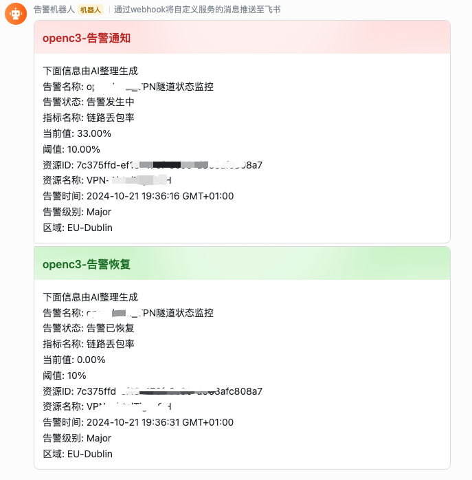
Open-C3识别告警内容的一个更主要的用途是要把它展示在“当前告警”页面。所以当告警源源不断的回调到Open-C3时，Open-C3会根据识别出来的内容进行标记和消除，从而可以达到在“当前告警”页面只展示现在还没有恢复的告警。所以准确的识别回调的内容就尤为重要。
在没有IA之前，我们通过格式匹配的方式。这样每次有新的告警格式，都需要进行一次编码和匹配。
Open-C3当前使用的是AWS的bedrock服务进行告警内容识别。
需要在下面文件中配置bedrock服务的aksk和region。
# cat /data/open-c3-data/sysctl.conf|grep bedrocksys.mai.bedrock.ak: xxxxsys.mai.bedrock.region: us-east-1sys.mai.bedrock.sk: xxxx
当然，如果你没有benrock服务，又需要识别第三方告警内容的话，需要实现一个类似代码中 c3mc-mai-bedrock 这个功能。
13.3 配置
13.3.1 配置回调
这里以华为云为例，在华为云SMN中配置

回调的地址为 http://open-c3网址/api/ci/exmesg/huawei_rds?group=huawei_report
回调的地址为http://open-c3网址/api/ci/exmesg/消息处理方式?group=告警组
例：回调的地址为http://open-c3网址/api/ci/exmesg/huawei_rds?group=huawei_report
注：消息处理方式是代码中的一个处理逻辑，如果使用的消息处理方式为定义，会使用默认的处理方式。Open-C3当前只有一个默认的处理方式，也就是前面说的用AI来处理。所以这里写什么字符串都可以。
13.3.2 配置告警组

在Open-C3上配置同名的告警组。并把成员添加到告警组中。
13.4 总结
有了报警接入的功能，我们可以把基础所有的告警统一到当前告警页面中进行展示和管理。
14 kubernetes管理
14.1 简介
很多服务都会选择部署在容器中，通过Kubernetes进行管理。Open-C3也集成了Kubernetes的管理功能，一方面是为了管理Kubernetes、另一方面是为了管理CICD。在后续章节中会讲到发布流程会使用Kubernetes应用的信息。
14.2 集群导入
导航菜单进入： 容器集群 -> kubernetes应用管理页面
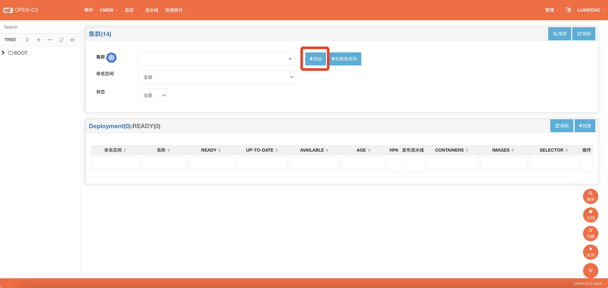
点击添加按钮

把内容填写后点击测试按钮，如果测试成功说明测试没有问题，然后点击保存凭据。
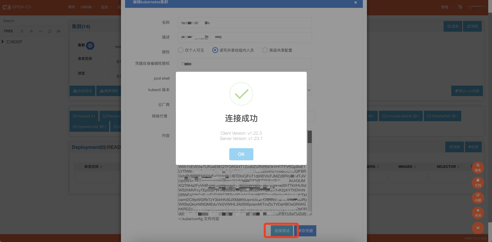
保存后可以看到集群中应用的信息，同时可以创建应用编辑应用等。
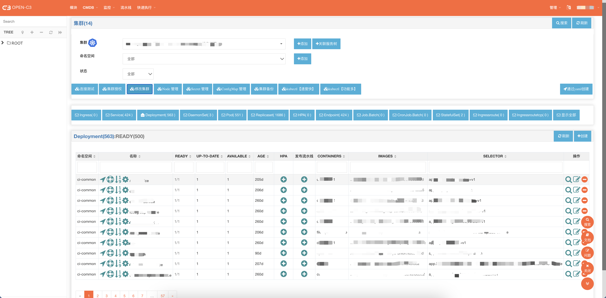
14.3 集群授权

15 手机端Web
15.1 简介
Open-C3的前端
16 未完待续...
监控配置的最佳实践 …